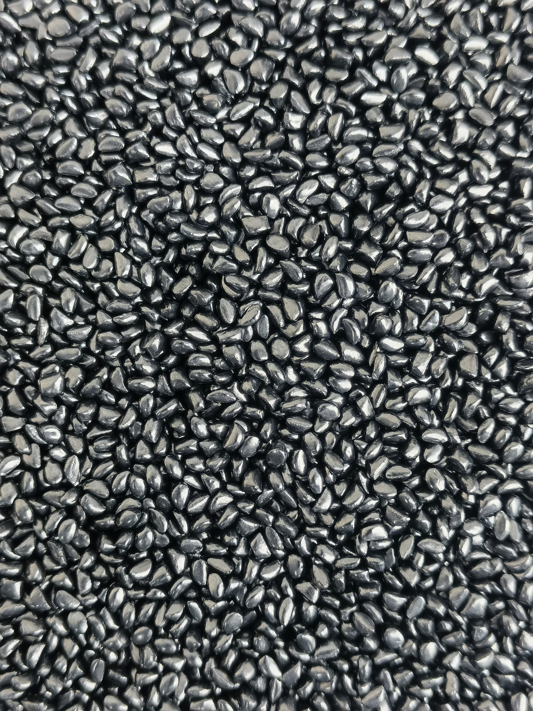
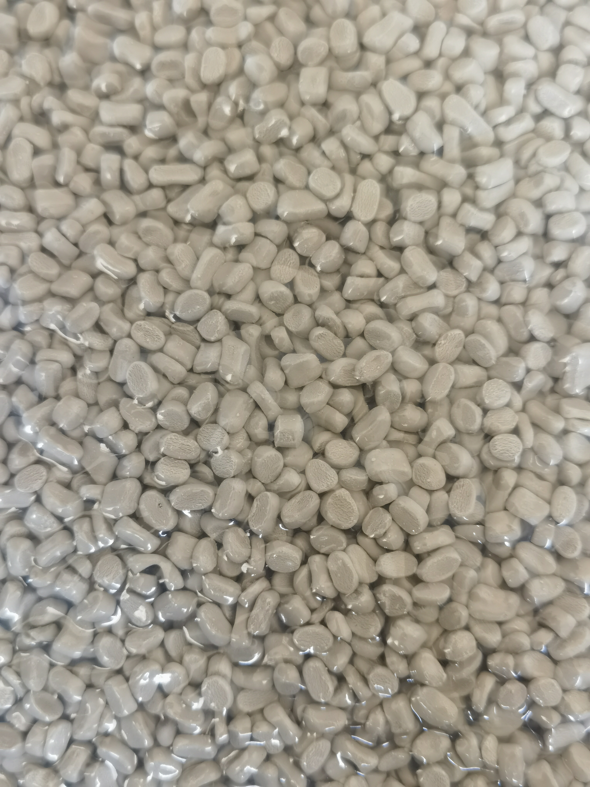
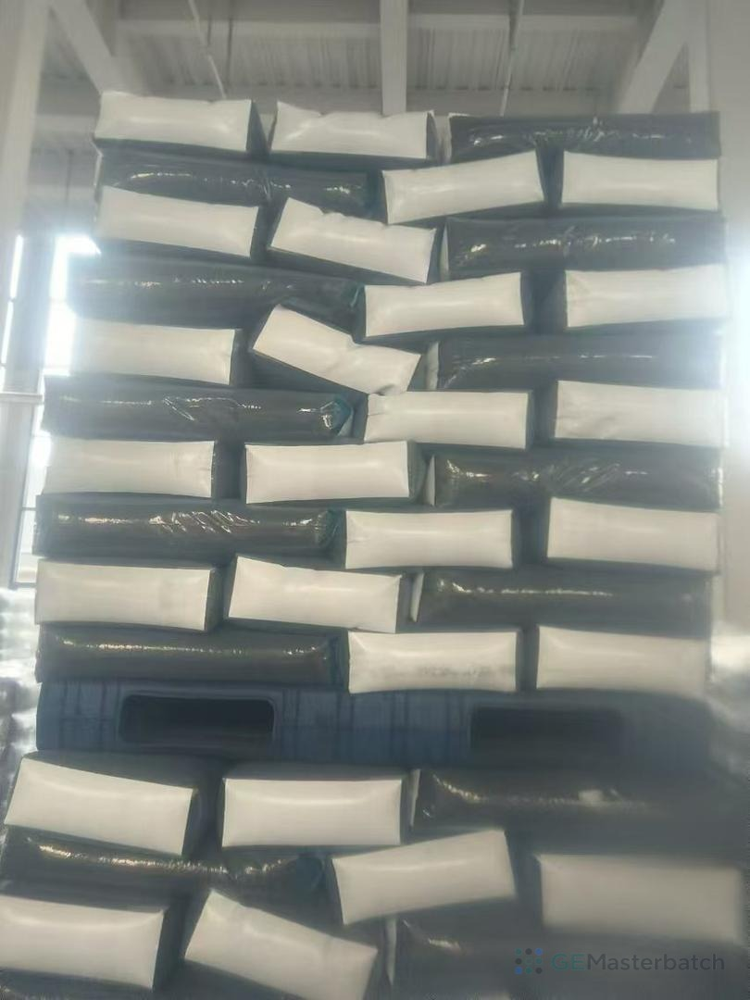
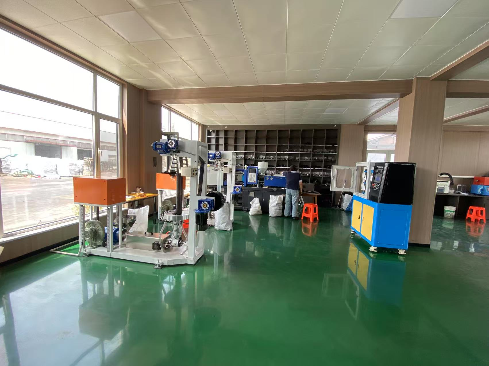

Release the lot
Carbon black content, moisture and MFI are checked against the grade before shipment.
BK040 is GE CHEMICAL's high-loading black masterbatch for premium film and high-gloss molded parts. It carries 40% virgin carbon black in a matched LLDPE + LDPE carrier with only 5.8% CaCO₃ filler.

BK040 is the top grade in the five-step 20%–40% range. It pairs the highest carbon black loading with the lowest filler content.
Choose BK040 when maximum jetness and a low addition rate matter. Move down to BK035 when a close visual result at a lower price per kilogram is the better fit.
Compare all BK grades
BK040 is the top of the five-grade range. It carries 40% virgin carbon black, a 40% LLDPE + LDPE carrier, and 14% PE wax and stearic acid. The low filler level leaves more room for pigment and carrier in every pellet.
BK040 is positioned for film blowing and injection molding, with re-granulating also listed on the current TDS. Confirm the final fit with the base resin and operating conditions.
Use BK040 when thin-gauge film needs high opacity, deep black and gloss with a low addition rate.
Use BK040 for rich, uniform black on visible parts where surface finish and adjustable flow matter.
Use BK040 where the regrind variation and final black target justify a higher-loading grade.
These values come from the current BK040 technical data sheet. Confirm the latest controlled version for quotation and approval.
Uniform 2.5mm granules, adjustable MFI and a PE carrier make BK040 suitable for product trials in film and molding applications.

| Model | BK040 |
|---|---|
| Appearance | Black granules, 2.5 × 2.5 × 2mm |
| Carbon black | 40% virgin carbon black |
| Carrier | LLDPE + LDPE, 40% |
| Dispersing agent | PE wax + stearic acid, 14% |
| Filler | 5.8% CaCO₃ |
| Softening | Good, does not block the screen |
| Dispersion | Good, no carbon black specks |
| Moisture | 0.2% max |
| MFI | 3–50 g/10min at 190°C, 21.6kg, adjustable |
| Packaging | 25kg per bag |
| Additional ratio | 2%–5% recommended, adjustable to production |
| Applications | Film blowing, injection molding, re-granulating |
Start with the batch record, confirm the sample against your resin, then verify BK040 on the line before a production order.
Carbon black content, moisture and MFI are checked against the grade before shipment.
Share PE or PP, process and target so the sample direction fits the application.
Check jetness, gloss, dispersion and feeding at the intended addition rate.

Points buyers ask before comparing BK040 with BK035 or running a trial sample.
BK040 is the top grade at 40% carbon black and 5.8% filler, compared with BK035 at 35% carbon black and 17.8% filler. BK040 is the direction for deeper black, higher gloss and lower addition rate. BK035 is the option when close visual performance at a lower price per kilogram is the better fit.
Yes. BK040 is the top of the current BK range at 40% virgin carbon black. Moving much beyond 40% in a PE carrier makes dispersion harder and can make the pellet dustier and more difficult to feed.
BK040 is positioned for film blowing. The 40% loading supports high opacity and deep black in thin gauge with a lower addition rate. The low filler content helps maintain gloss. Confirm performance in a trial on the actual film line.
Yes. BK040 is also positioned for injection molding with good dispersion, no carbon black specks and an adjustable MFI from 3–50 g/10 min at 190°C and 21.6kg.
BK040 contains 5.8% CaCO₃ filler, the lowest in the current BK range. Lower filler leaves more room for carbon black and carrier, which supports gloss and mechanical properties. Compare the result at the actual addition rate rather than price per kilogram alone.
The TDS recommends 2%–5% by weight, adjustable to the production setup. A trial should establish the final ratio for the specific resin, process and blackness target.
BK040 uses a 40% LLDPE + LDPE carrier, matched to polyethylene film and molding. If the production resin is PP instead of PE, ask about a PP carrier grade and confirm compatibility.
Yes. Share the base resin and application so a trial sample can be arranged. Check jetness, gloss, dispersion and processing on your own line before ordering.
GE CHEMICAL runs 12 production lines with over 50,000 tons of annual capacity, supplying brands like Total and Tosaf across more than 30 countries. The range runs from cost-first BK020 to this 40% high-jetness grade.
Ready to test 40% carbon black masterbatch BK040? Send the base resin, process and monthly volume. Include the final application if known so the team can review the grade and sample route.